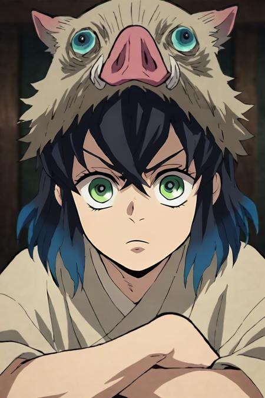

Sobre a Página
O site traz diversas informações sobre o anime de Demon Slayer (Kimetsu no Yaiba), você não fica de fora das notícias do anime, irá amar os personagens citados, e conhecerá resumidamente a história de Demon Slayer.
O site traz diversas informações sobre o anime de Demon Slayer (Kimetsu no Yaiba), você não fica de fora das notícias do anime, irá amar os personagens citados, e conhecerá resumidamente a história de Demon Slayer.
A história gira em torno de Tanjirō Kamado, um garoto bondoso e inteligente que vive junto com sua mãe, Kie Kamado, e seus 5 irmãos mais novos, ganhando dinheiro vendendo carvão, assim como seu falecido pai, Tanjuro Kamado. Certo dia, ao voltar para casa após ter ido a uma cidade vender carvão, Tanjiro descobre que perdeu toda sua família durante um ataque de onis. Uma de suas irmãs, Nezuko, é a única que sobreviveu ao ataque. Nezuko então passa a ser um oni, mas ela surpreendentemente ainda demonstra sinais de emoções e pensamentos humanos. Tanjirō decide então se tornar um caçador de onis para descobrir mais sobre eles. Com a ajuda de Nezuko, Tanjiro parte em jornadas pelo Japão a fim de impedir que a mesma tragédia que afetou sua família aconteça com outras pessoas, enquanto ele busca uma maneira de tornar Nezuko humana novamente.
Tanjiro Kamado (Kamado Tanjiro) é o principal protagonista de Demon Slayer: Kimetsu no Yaiba. Ele é um membro de Kanoe dos Caçadores de Demônios, que se juntou a organização para caçar o responsável pelo assassinato de sua família e a transformação de sua irmã, Nezuko Kamado, em um demônio, enquanto também procurando uma cura para ela.

Nezuko Kamado (Kamado Nezuko) é a irmã mais nova de Tanjiro Kamado e um dos dois membros restantes da família Kamado. Antes humana, ela foi atacada e transformada em um demônio por Muzan Kibutsuji. Ela é uma das protagonistas de Kimetsu no Yaiba: Demon Slayer. Procurar uma cura para Nezuko foi uma das razões que Tanjiro se tornou um Caçador de Demônios.

Zenitsu Agatsuma é um Caçador de Demônios. Ele é um companheiro de viagem e amigo de Tanjiro Kamado, sendo um dos principais protagonistas do Demon Slayer: Kimetsu no Yaiba. Zenitsu é um jovem de pele clara e olhos de aparência assustada e inclinados para baixo, que desbotam do marrom suave ao dourado. Ele tem cabelos curtos e amarelos de comprimentos variados, cortando diretamente nas pontas, onde desbota para uma cor laranja mais escura, que cai na frente do rosto em franja irregular. Antes de se tornar um Caçador de Demônios, o cabelo de Zenitsu era originalmente preto, mas ficou com a cor atual de quando ele foi atingido por um raio durante o treinamento.
Inosuke Hashibira (Hashibira Inosuke) é um Caçador de Demônios, sendo um dos amigos e companheiro de viagem de Tanjiro Kamado e um dos principais protagonistas de Kimetsu no Yaiba: Demon Slayer.

Após o final chocante da quarta temporada de Demon Slayer: Kimetsu no Yaiba, que adaptou o Arco do Treinamento dos Hashiras, a Crunchyroll revelou com uma pequena prévia que o Castelo Infinito será adaptado em uma trilogia de filmes e não como uma série episódica tradicional. Assim, o anime baseado na obra de Koyoharu Gotoge vai se despedir em grande estilo nas telonas ao adaptar a última parte da história de Tanjiro e Nezuko. E pelo que sabemos, graças ao mangá, o encerramento será grandioso e repleto de batalhas emocionantes. Ainda não sabemos muito sobre a trilogia que encerrará a caçada a Muzan Kibutsuji, mas o IGN Brasil separou as principais informações reveladas até o momento de Demon Slayer: Kimetsu no Yaiba – O Castelo Infinito.

Quando será lançado o primeiro filme Demon Slayer: Kimetsu no Yaiba – O Castelo Infinito?
Embora o anúncio da trilogia tenha sido feito recentemente, ainda não há data de lançamento de pelo menos o primeiro filme do Demon Slayer: Kimetsu no Yaiba – A Fortaleza Infinita. Mas conforme os padrões de lançamento das temporadas anteriores, normalmente esperamos um ou dois anos entre cada lançamento. Portanto, o primeiro longa-metragem poderá chegar em meados de 2025. A Crunchyroll e a Sony Pictures Entertainment distribuirão os três filmes nos cinemas de todo o mundo, exceto em alguns territórios asiáticos. Há rumores de que isso acontecerá simultaneamente em todo o mundo, em vez de primeiro no Japão e depois em outros territórios. Mas nada está confirmado ainda.
Trailer de Demon Slayer: Kimetsu no Yaiba – O Castelo Infinito